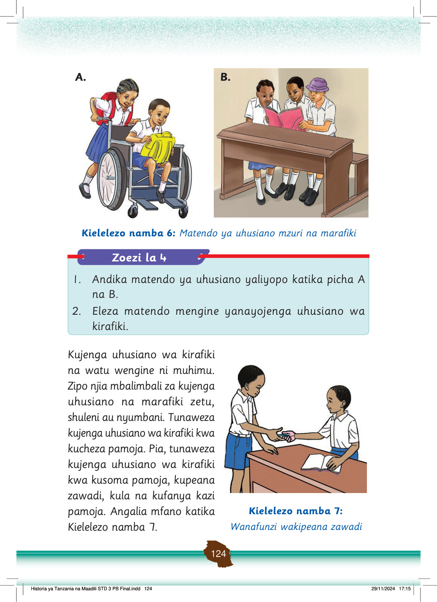

Kupeana zawadi husaidia kukuza upendo kati ya marafiki na huimarisha uhusiano.
Uhusiano na marafiki ni muhimu sana katika maisha yetu ya kila siku.
Uhusiano mzuri wa kirafiki hujenga mazingira ya kusaidiana, kujifunza kutoka kwa wengine na kuleta ufanisi katika mambo tunayoyafanya.
Pamoja na umuhimu wa kujenga urafiki, ni vema kujenga uhusiano unaofaa.
Kabla ya kujenga uhusiano ni vema kufahamiana vyema.
Hii itasaidia kuepuka marafiki ambao wanaweza kusababisha tukajiingiza katika vitendo ambavyo ni kinyume na maadili ya jamii.
Kazi za kufanya namba 3
Kazi ya kufanya namba 3: Fikiri na andika athari za kujenga uhusiano wa kirafiki usiofaa.
Fikiri na andika athari za kujenga uhusiano wa kirafiki usiofaa.
Urafiki huathiri tabia za vijana iwapo kuna tofauti kati yao katika vitendo, malezi, makuzi na mienendo.
Uchaguzi wa marafiki wema na wenye tabia nzuri unapaswa kusisitizwa katika kujenga na kukuza uhusiano wa kirafiki.
Umuhimu wa uhusiano wa familia na marafiki
Kazi ya kufanya namba 4: Andika umuhimu wa uhusiano wa kifamilia na marafiki wengine nyumbani na shuleni.
Kazi ya kufanya namba 4
Andika umuhimu wa uhusiano wa kifamilia na marafiki wengine nyumbani na shuleni.
Uhusiano ni muhimu katika maisha ya binadamu.
Katika familia, uhusiano:
(a) Husaidia kujenga msingi imara wa upendo, maelewano, na kupata msaada kutoka kwa ndugu wa karibu; na